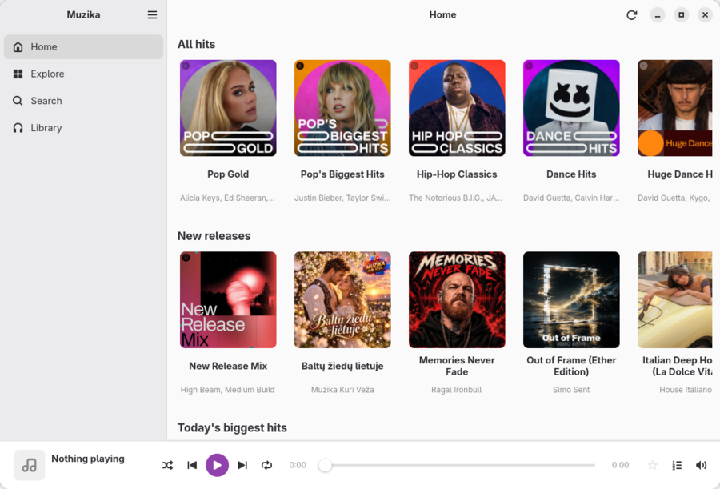
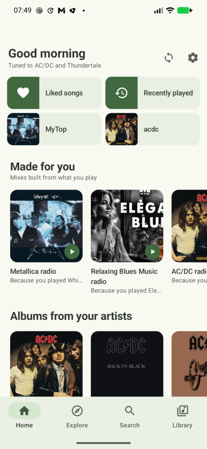
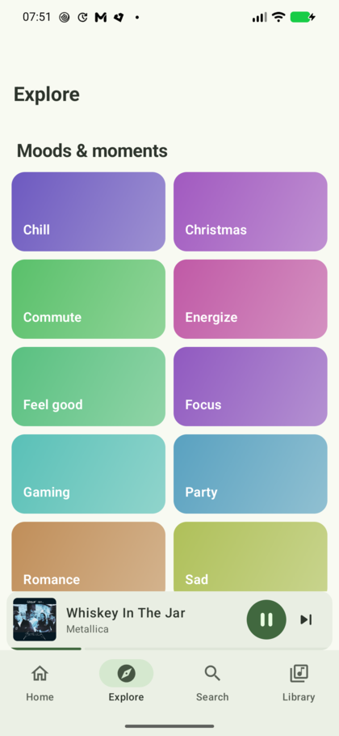
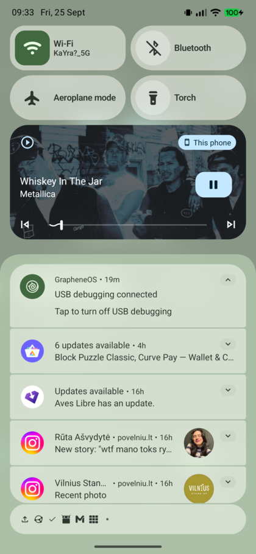

A music player for Linux and Android that needs no account.


No sign-in, no API key, no Muzika server. Browsing, search and radios work anonymously.
YouTube Music, SoundCloud, Bandcamp — and your own audio files, read with their real tags and cover art.
One small JSON file in a folder you already sync: Syncthing, Dropbox, Nextcloud, OpenCloud. Your music files can travel the same way.
Your most-played artists seed radios on your own device. Nothing about what you listen to is uploaded.
Time-aligned and following the song, from LRCLIB, NetEase and KuGou.
MPRIS on the desktop; media notification, lock-screen controls, a home-screen widget and launcher shortcuts on Android.
Android — add the repository to Obtainium and get every update automatically:
https://github.com/tpsvca/muzikaOr download the APK from the latest release. Android 8.0 or newer.
Linux — GTK4, libadwaita and GStreamer come from your distribution:
git clone https://github.com/tpsvca/muzika.git
cd muzika/desktop
./install.sh
